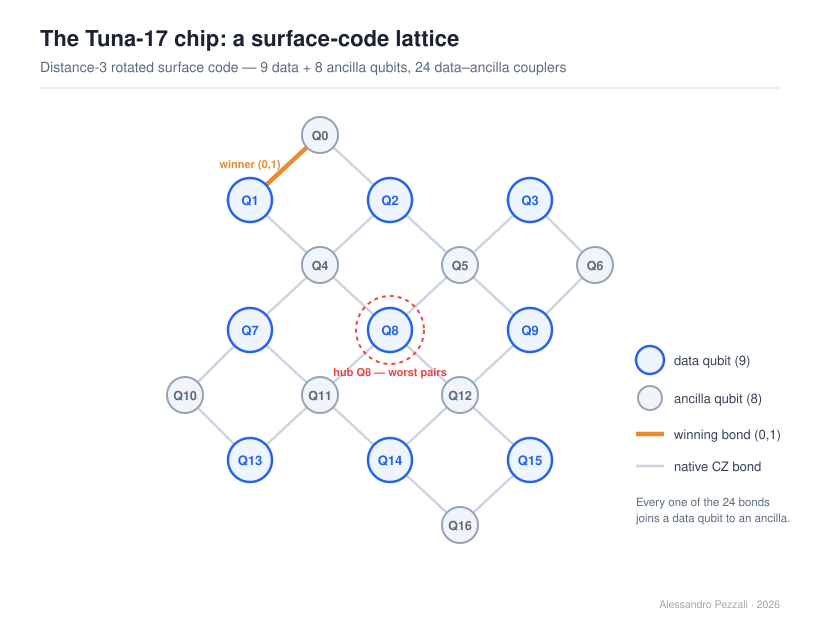
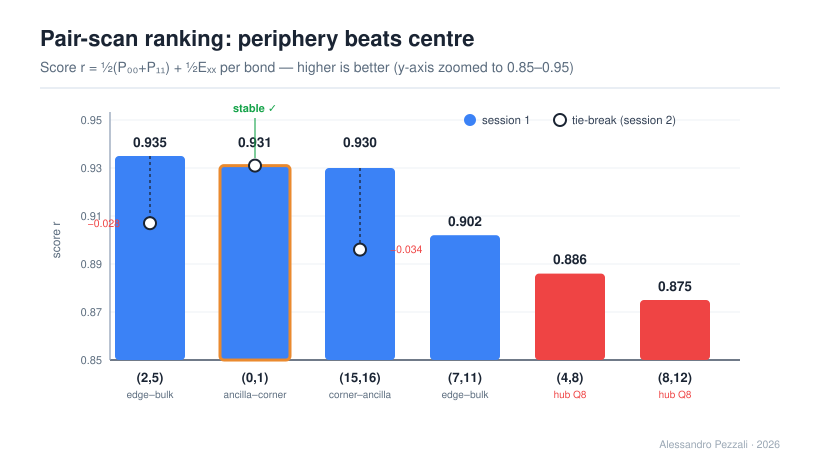
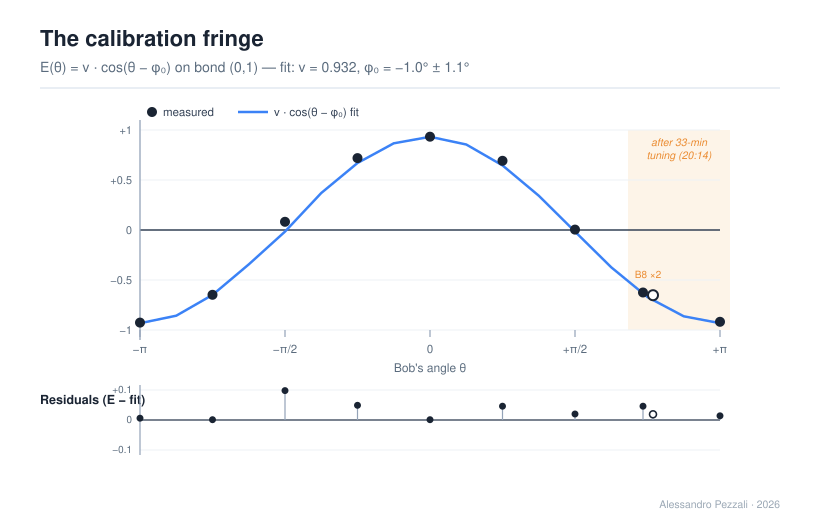
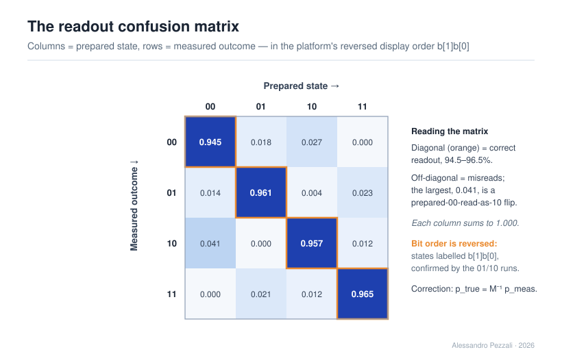
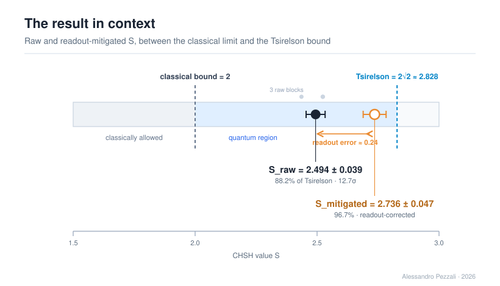

Che cosa dimostra questo esperimento
Il bound di Tsirelson non si può battere: è un teorema. La domanda del capitolo non è quindi superarlo, ma misurare quanto vicino può arrivarci un processore quantistico pubblico, e rendere conto di ogni punto del divario. Tutto ruota attorno a una sola identità: per lo stato di Bell, S = 2√2·v, dove v è la visibilità — quanto lo stato preparato dall'hardware si avvicina a una coppia entangled perfetta. Inseguire Tsirelson significa inseguire v → 1, e ogni imperfezione della macchina compare come un calo di v.
Sulla coppia d'angolo (0,1) del processore Tuna-17, il test CHSH definitivo — tre blocchi consecutivi delle quattro configurazioni, 512 shot ciascuna — ha restituito S_raw (il valore grezzo) = 2.494 ± 0.039: oltre il limite classico — S ≤ 2, la soglia imposta dal realismo locale — di circa 12.7 deviazioni standard (una violazione netta), ma solo l'88.2% del massimo quantistico, e — va detto — un po' meno del 91.4% del Capitolo 1. A prima vista la versione più accurata ha fatto peggio della prima. La spiegazione arriva più avanti, ed è la parte più interessante.
Scegliere i qubit e calibrare gli angoli
Per questo chip non esiste una tabella di calibrazione pubblica, quindi la coppia migliore va trovata sul campo — e il compilatore di Tuna-17 ha offerto un regalo. Mappa i qubit uno-a-uno e rifiuta in compilazione una porta tra qubit non connessi, invece di instradarla: quel rifiuto è un oracolo di adiacenza gratuito. Due sole submission — una accettata su (0,1), una rifiutata su (0,8) — sono bastate a confermare che la topologia è il codice di superficie di distanza 3, "Surface-17": nove qubit dati e otto di ancilla, 24 accoppiatori dati–ancilla.

Il chip Tuna-17 come codice di superficie di distanza 3: nove qubit dati (in blu) e otto di ancilla (in grigio), 24 accoppiatori dati–ancilla. La coppia d'angolo (0,1) usata nell'esperimento è evidenziata in arancione; l'hub centrale Q8, il più connesso, è marcato come quello che ha dato le coppie peggiori.

La classifica delle sei coppie candidate per punteggio r (barre = prima sessione): le due coppie sull'hub Q8 — le barre rosse a destra — sono ultime, la periferia batte il centro. La coppia (0,1) ha il bordo arancione; i cerchi vuoti sono la ri-misura di controllo (tie-break, seconda sessione), che mostra (0,1) fermo mentre (2,5) e (15,16) calano. L'ho scelta per questa stabilità, non per il punteggio più alto.
La scansione delle coppie ha dato la sorpresa più netta: le due coppie che toccano Q8 — il qubit più connesso del chip, l'hub centrale di grado 4 — sono le peggiori delle sei. Su questo dispositivo la periferia batte il centro. Ho portato avanti la coppia (0,1) non per il punteggio più alto, ma per la sua stabilità: la qualità delle coppie è soggetta a un drift di calibrazione di circa 0.03 su tempi di ~30 minuti, e (0,1) era quella che si muoveva di meno.
Prima del test vero ho misurato gli angoli invece di fidarmi di quelli nominali — una frangia di calibrazione da cui leggo la visibilità v = 0.932 e uno scostamento sistematico φ₀ = −1.0° ± 1.1°. Quel φ₀ è più piccolo della griglia da 5° che l'hardware riesce a rappresentare: il verdetto della calibrazione è il raro e soddisfacente "niente da correggere" — gli angoli nominali erano già veri.

La frangia di calibrazione: dieci acquisizioni a nove angoli (B8 misurata due volte), con il coseno interpolato v·cos(θ − φ₀) e i residui in basso. L'ampiezza della curva è la visibilità v = 0.932; lo scostamento orizzontale φ₀ = −1.0° è sotto la griglia hardware da 5° — nessuna correzione da applicare.
Dove vive il divario: nei rivelatori, non nello stato
La svolta è la Fase D. Preparando e misurando i quattro stati di base ho costruito la matrice di confusione della lettura (fedeltà 0.945–0.965) e ho corretto gli stessi dati del test CHSH: S_mitigated (il valore corretto) = 2.736 ± 0.047, il 96.7% del bound di Tsirelson. Tre precisazioni non negoziabili: S_mitigated è una stima dello stato prima della lettura, non una misura migliore, e non prende mai il posto del grezzo; la correzione allarga la barra d'errore (0.039 → 0.047), non la stringe, perché invertire la matrice mescola gli esiti e amplifica il rumore; e il valore resta sotto 2√2 — il controllo che la correzione non stia sovracorreggendo verso la regione proibita.

La matrice di confusione 4×4 della lettura (base visualizzata b[1]b[0]): ogni colonna è la distribuzione misurata per uno stato di base preparato. La diagonale (in arancione, fedeltà 0.945–0.965) è la lettura corretta; il peso fuori diagonale è l'errore di lettura che la mitigazione rimuove — il più grande, 0.041, è uno scambio 00→10.
Il risultato ribalta la lettura del numero grezzo. Il divario dal massimo quantistico vive quasi tutto nei rivelatori: circa 8.5 punti percentuali sono errore di lettura, e solo ~3.3 punti sono porte e decoerenza. Lo stato entangled che Tuna-17 ha preparato era già entro il 3% da una coppia di Bell perfetta. Inseguire Tsirelson, su questa macchina, è soprattutto inseguire una misura migliore, non uno stato migliore.
Le sei scoperte
In breve, le sei cose che il capitolo ha stabilito:
- Oracolo di adiacenza gratuito: il compilatore rifiuta le coppie non connesse invece di instradarle — topologia Surface-17 confermata con due submission.
- La periferia batte il centro: l'hub Q8 (grado 4) produce le due coppie peggiori.
- Drift di calibrazione di ~0.03 su tempi di ~30 minuti.
- Angoli nominali già corretti: φ₀ = −1.0° ± 1.1°, sotto la griglia hardware da 5°.
- Due valori di S, divario decomposto: 88.2% grezzo → 96.7% corretto, con il grosso del divario nei rivelatori.
- Bitstring visualizzato invertito (b[1]b[0]): una trappola per chi legge i singoli esiti, ma la parità — e quindi S — ne è immune.

I due numeri sull'asse CHSH: S_raw = 2.494 (marcatore pieno) e S_mitigated = 2.736 (marcatore vuoto), tra il limite classico (2) e il bound di Tsirelson (2√2 ≈ 2.828). La parentesi tra i due è l'errore di lettura (≈ 0.24): il divario dal massimo quantistico vive nei rivelatori, non nello stato.
Trasparenza e riproducibilità
Il quaderno riporta i job ID, i result ID, i timestamp e gli hash dei programmi eseguiti, le probabilità grezze restituite dalla piattaforma, l'analisi completa delle incertezze e il codice sorgente cQASM 3.0 integrale in appendice, insieme agli screenshot originali della piattaforma — compresa la coppia accetta/rifiuta dell'oracolo di adiacenza. I due numeri sono sempre riportati insieme: il grezzo come headline, il corretto come stima. Nessuna pretesa oltre ciò che i dati sostengono.
Autore unico: Alessandro Pezzali. Progetto di ricerca personale indipendente, a scopo educativo e documentale. © 2026 Alessandro Pezzali.
Quantum Laboratory Notebook — Chasing Tsirelson on Tuna-17
PDF di 26 pagine in inglese · 5 figure vettoriali · screenshot originali (inclusa la coppia accetta/rifiuta dell'oracolo di adiacenza) · dati grezzi, analisi e codice sorgente completo · 2.6 MB